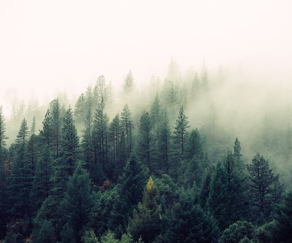

“In photography there is a reality so subtle that it becomes more real than reality.” Alfred Stieglitz “There is one thing the photograph must contain, the humanity of the moment.” Robert Frank “Taking an image, freezing a moment, reveals how rich reality truly is.” Anonymous “Photography is a way of feeling, of touching, of loving. What you have caught on film is captured forever… It remembers little things, long after you have forgotten everything.” Aaron Siskind “We are making photographs to understand what our lives mean to us.” Ralph Hattersley “A thing that you see in my pictures is that I was not afraid to fall in love with these people.” Annie Leibovitz
VIEW OUR NEW SPRING COLLECTION


VIEW OUR NEW FORREST COLLECTION


VIEW OUR NEW SUNSET COLLECTION